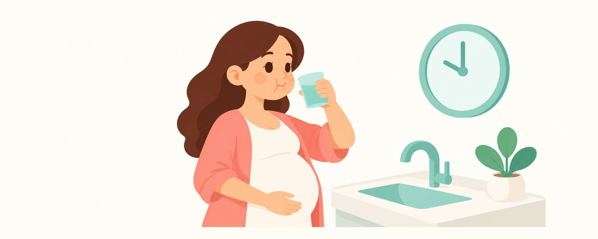

Don't Brush Right After Morning Sickness: How to Protect Your Teeth After Vomiting
Brushing right after vomiting wears down acid-softened teeth. How to rinse and wait about 30 minutes to brush, and what to do if toothpaste smell is too much.
At a glance
- After vomiting, rinse with water first
- Wait about 30 minutes before you brush
- Toothpaste smell gets to you? Try a mild-flavored one
After throwing up from morning sickness, your mouth feels sour and gross, and you want to brush right away. But brushing at that moment can actually be hard on your teeth. Here's the order to follow to protect your teeth after vomiting, plus tips for when brushing itself feels like too much.
Why not brush right after vomiting?
When you vomit, stomach acid comes up and touches your teeth. Stomach acid is very strong, and it briefly softens the enamel, the outer surface of the teeth. Scrubbing with a toothbrush in that state wears away the weakened surface more easily than usual.
Luckily, the softened state doesn't last long. Saliva dilutes the acid in your mouth and helps the tooth surface harden again. So after vomiting, it's best to rinse first to wash the acid away, wait a bit, and then brush.
Vomiting once or twice won't damage your teeth. The problem is when frequent vomiting goes on for months. Then the backs of the front teeth, where acid touches most often, can slowly thin out. This kind of wear, where acid gradually dissolves the teeth, is called acid erosion. Enamel that wears away doesn't grow back, so preventing it is what matters.
During morning sickness, an empty stomach makes the nausea worse, so you may find yourself eating small amounts often. Sipping sour or fizzy drinks all day keeps your mouth bathed in acid for longer. That's another habit that weakens teeth, so it's good to cut back.
The good news is that a few small habits prevent most acid erosion.
Rinse, wait, and brush gently
After vomiting, remember this order:
- First, rinse your mouth several times with plain water and spit.
- If you can, rinse once more with baking-soda water. Dissolve 1 teaspoon of baking soda in a cup of water. It helps neutralize the acid. Spit it out after rinsing.
- Brush after about 30 minutes. In the meantime, saliva helps the tooth surface harden again.
- When you brush, use a soft toothbrush with a light, gentle touch.
Many moms feel queasy just from the smell of toothpaste. If that's you, try switching to a mild-flavored toothpaste or a children's toothpaste. If you use a children's toothpaste, check that it contains fluoride. Fluoride helps protect your teeth.
If putting a toothbrush in your mouth makes you gag, switch to a toothbrush with a smaller head. Don't push it deep toward the back of the tongue, and it's fine to brush at a time of day when your stomach feels better. If mornings are the hardest, you can split it up by brushing more carefully in the afternoon or evening.
Keeping a cup of water by your bed or in the bathroom makes it easy to rinse right after vomiting. Some people freshen up with lemon water or sour drinks, but those are acidic too, so they don't help your teeth. Plain water or baking-soda water is the safest choice.
Morning sickness usually eases over time. During the hard stretch, it's okay if you can't follow this perfectly every time. Just remembering the order, "rinse, wait, then brush," is enough to protect your teeth.
Frequently asked questions
My mouth feels so gross while I wait 30 minutes.
Rinsing well with water or baking-soda water takes away much of the sour taste and smell. You can rinse as many times as you like until you feel better. Just hold off a little on brushing.
Once morning sickness ends, will thinned teeth recover?
Enamel that wears away doesn't grow back. That's why the habit of rinsing and waiting during morning sickness matters. If your teeth already feel sensitive or seem thinner, have your dentist check.
Can I go to the dentist while I have morning sickness?
Yes. If your teeth are sensitive or painful, you can get dental care at any point in pregnancy. If lying back in the dental chair makes you feel sick, mention it ahead of time. For care that isn't urgent, the second trimester, when morning sickness has eased, may be more comfortable.
Can I brush with just water and no toothpaste?
On days when the smell is too much, brushing with water is better than not brushing at all. But rather than doing that for a long time, it's best to find a mild-flavored fluoride toothpaste and switch to it.
When to see your dentist
- Your teeth feel sensitive to cold water or sweets
- The edges of your front teeth look thin and let light through
- The tooth surfaces seem worn smooth or changed in shape
- Morning sickness is so severe that you vomit several times a day (let your OB know too)
Get these at the right time
Enter your child's birth date (or due date) in the Tooth Calendar app and these articles arrive as reminders when they matter. Free, no sign-up.
Sources
The information in this article is for general educational purposes and does not replace professional dental care. Talk to a dentist about your child's condition.